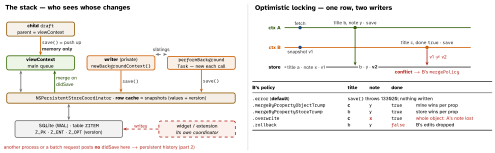

ios-platform · folio
In one line: A context is an in-memory scratchpad bound to one serial queue;
it reaches SQLite through a coordinator whose row cache holds last-known
row values. Contexts see each other’s work only after a save reaches the store and is
merged in. Two saves of one row: optimistic locking detects it at
save() and the saver’s merge policy decides — by default the save throws.
Download PDF Print view LaTeX source


Queues
.mainQueueConcurrencyType(viewContext) or.privateQueueConcurrencyType(.confinement…deprecated iOS 9). An object belongs to its context’s queue — reading one property is access.perform {}enqueues and returns;performAndWait {}blocks the caller, reentrant. iOS 15try await ctx.perform(schedule:)returns a value:.immediate(default) runs inline if already on the queue, else enqueues;.enqueuedalways goes to the back.newBackgroundContext()/performBackgroundTask: a new private context per call, parent = the coordinator. Two at once = two writers → conflicts, duplicates: keep one long-lived writer.
Identity & IDs
- Uniquing: one object per row per context.
object(with:)always returns (fault may fail later);existingObject(with:)throws if gone;registeredObject(for:)= only if in memory. - New objects carry a temporary ID (
isTemporaryID) until the store saves them — it resolves nowhere else:obtainPermanentIDs(for:)first. Persist a reference asobjectID.uriRepresentation().
Parent/child vs siblings
- A child’s fetches go through its parent, so they see the parent’s unsaved state; its
save()copies changes into the parent’s memory. Use: a cancelable edit sheet. Disk needs the parent’s save too. - Siblings share only the coordinator: nothing crosses until a save reaches the store and a merge runs.
automaticallyMergesChangesFromParentmerges every save of the parent (root context: the coordinator), keeping unsaved local edits. Manual: on.NSManagedObjectContextDidSave,mergeChanges(fromContextDidSave:)inside the target’sperform. - Query generations (iOS 10, SQLite):
setQueryGenerationFrom(.current)pins reads to one store snapshot — stable UI during an import; save/merge advances it. refresh(obj, mergeChanges:):truere-reads, keeps edits;falsediscards them → a fault again.
Example — a cancelable edit, and an upserting writer
let draft = NSManagedObjectContext(concurrencyType: .mainQueueConcurrencyType)
draft.parent = container.viewContext // sees parent's unsaved state
let item = draft.object(with: itemID) as! Item
item.title = "New title" // Cancel = just drop `draft`
try draft.save() // -> viewContext (memory)
try container.viewContext.save() // -> coordinator -> SQLite
// one writer; model: Item has a unique constraint on remoteID
let writer = container.newBackgroundContext()
writer.mergePolicy = NSMergePolicy.mergeByPropertyObjectTrump
try await writer.perform {
for dto in dtos { // duplicate remoteID -> update
let i = Item(context: writer); i.remoteID = dto.id; i.title = dto.title }
try writer.save() } // values/IDs leave, never objectsConflicts — the mechanism
- At fetch a context keeps a snapshot (values + row version
Z_OPT); at save each changed object’s snapshot is compared with the row. Mismatch =NSMergeConflict, resolved by the context saving second. DefaultNSErrorMergePolicy:userInfo["conflictList"], nothing saved. - Unique constraints (per entity): with
.errora duplicate insert throwsNSConstraintConflict(133021); with a property-trump policy it merges into the existing row = upsert.
Traps
- Policy set only on viewContext: the importer saves second and its
.errorthrows. Set a policy on every saving context. .overwrite≠ “mine wins”: it writes the whole object, undoing others’ changes to properties you never touched.performAndWaitonto viewContext from a queue main is waiting on = deadlock.- Returning a managed object from
await performcompiles; using it outside is still a queue violation. Return IDs or values. -com.apple.CoreData.ConcurrencyDebug 1crashes on the first wrong-queue access, in__Multithreading_Violation_AllThatIsLeftToUsIsHonor__.